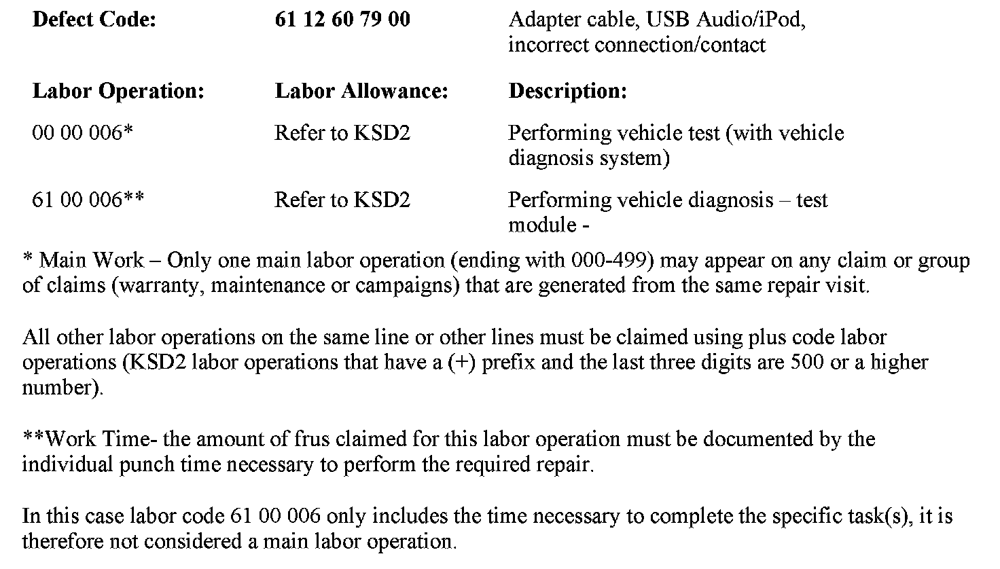

Audio - iPod/iPhone(R) Poor Audio Quality/No Recognition
SI B65 18 10Audio, Navigation, Monitors, Alarms, SRS
October 2010
Technical Service
SUBJECT
iPod/iPhone Has Extremely Poor Audio Quality and/or Is Not Recognized
MODEL
All models
Produced between 02/28/2007 and 10/31/2010 with option 6FL (USB Audio Interface)
SITUATION
When the iPod/iPhone is connected to the USB connector with the original Apple USB cable (white cable which comes with the iPod/iPhone):
^ The audio quality may be extremely poor
^ The device may not be recognized intermittently
CAUSE
1. Defective Apple USB cable or defective 30-pin socket on the iPod/iPhone
2. Defect in the USB audio interface (ULF, hands-free charging module integrated in the CIC)
CORRECTION
Cause 1:
Check the function with an Apple USB cable known to work properly; if it is still acting the same way, test the original Apple USB cable with an iPod/iPhone known to work properly.
If both tests do not resolve the issue, follow the procedure outlined for Cause 2.
Cause 2:
1. Connect a BMW approved battery charger and perform a vehicle test using the latest ISTA (Integrated Service Technical Application) diagnostic software.
2. Diagnose any relevant faults that are stored by completing the test plans.
3. Perform and complete the test plan "AT8400_SYSTEL - Check of telecommunications system". Please note the DIAGCODE (Diagnosis Code) presented at the end of the test plan. The test plan can be accessed via the following path:
^ Select "Activities\Information Search/Function structure\Body\Audio,Video,Navigation, Telephone (MOST ring)\Telecommunications" and start search.
^ In Telecommunications, select "AT8400_SYSTEL - Check of telecommunications system" and press "Display".
^ Follow the on-screen instructions to work through the test plan.

WARRANTY INFORMATION
Covered under the terms of the BMW New Vehicle/SAV Limited Warranty as applicable.